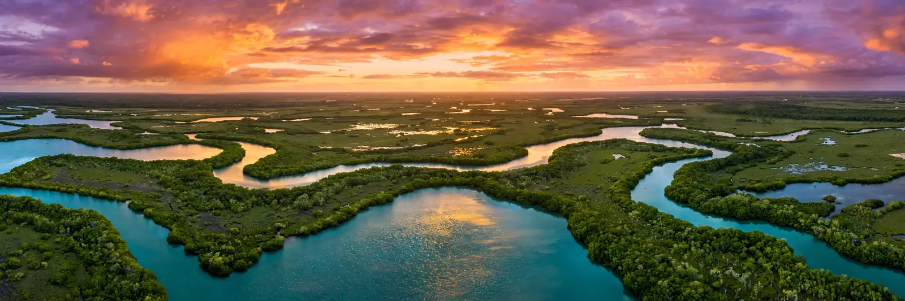

Cómo llegar
En carro: por la Autopista Nacional hasta el entronque del Central Australia (km 142), y de ahí a La Boca, puerta de la ciénaga. Distancias: La Habana–La Boca 166 km; Varadero–La Boca 94 km; La Boca–Playa Larga 11 km; La Boca–Playa Girón 45 km.
En ómnibus: Viazul tiene paradas en Playa Larga y Playa Girón. En tours: jeep safari 4x4 y excursiones de un día desde La Habana y Varadero, con guía, almuerzo y actividades incluidas.
Dentro de la ciénaga, las distancias son cortas pero las carreteras secundarias pueden estar en mal estado: un 4x4 o un chofer local son la mejor inversión.
- La Habana–La Boca: 166 km (~2.5 h)
- Varadero–La Boca: 94 km (~1.5 h)
- Ómnibus: Viazul a Playa Larga y Girón
- Tours: Jeep safari desde La Habana/Varadero